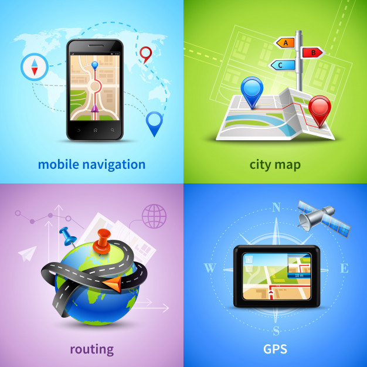

More than 7 years of experience in large-scale Cloud-based Java/J2EE and SOA/EAI implementations using SOAP and RESTful Web Services, Big Data, Enterprise Search using Apache Solr, JSF, Spring, Spring Boot Microservices, Amazon AWS S3, and Oracle SOA Suite, etc. with Agile (Scrum & Kanban). Currently working on Machine Learning and Deep Learning Models.
About Me
Latest Projects
Google Landmark Recognition 2020
Image retrieval is a fundamental problem in computer vision: given a query image, can we find similar images in a large database? This is especially important for query images containing landmarks, which accounts for a large portion of what people like to photograph. In this project, the developed models are expected to retrieve relevant database images to a given query image (ie, the model should retrieve database images containing the same landmark as the query). This challenge is organized in conjunction with the Landmark Recognition Challenge 2020. This year's project is structured in a representation learning format: we will create a model that extracts a feature embedding for the images. Kaggle will run the model on a held-out test set, perform a k-nearest-neighbors lookup, and score the resulting embedding quality with mean average precision.
Naval Mine Detection
Identified magnetic naval mines among rocks by processing and analyzing Sonar data for submarines. Processed multiple observations of sonar data for mines and rocks each with 60 time samples which either indicate the presence of a mine (actually a hollow pipe) or a rock (actually a rock).
Detection of Counterfeit Money
Developed an application to aid in detection of counterfeit bills. Analyzed correlations in data through a statistical study of each variable. Determined which variables are most likely to play a significant role in predicting the dependent variable, in this case a genuine bill.

Hybrid Database System for Library Management
Designed a Logical Data Model after research and interviews with stakeholders. Developed a Business Intelligence module. Developed a hybrid system with SQL and NoSQL Databases, using Transact-SQL in MSSQL Server and N1QL in Couchbase. Explored Analytics through Couchbase for intelligent reports and meaningful data visualization.
Employee Retention Prediction
Created a distributed data processing system in the cloud using Amazon S3, Amazon EMR service and HR dataset from Kaggle. Analyzed and displayed detailed analytics reports and visualizations using Python on Amazon SageMaker.
Segmentation of Photovoltaic Module Cells in Electroluminescence Images
Designed and developed a web application to efficiently store and manage EL images and the defect analysis data. Identified defective cells in solar panels through Image Processing. Built scripts to generate reports and send out notifications. Automated the process of Image examination and categorization of panels according to the defect diagnosis.
Twofish Crypto-Core
Designed and developed an encryption core based on the Twofish encryption algorithm.

GPS location Data Analysis collected via GSM channel
Programmed an AVR controller to interface with an active GPS module and a GSM handset. Process the NMEA data into readable coordinates and send it through the GSM channel (SMS).
Work Experience
Graduate Teaching Assistant - Arizona State University (Aug 2019 - Present)
IFT 433 - Intermediate Database Management Systems
IFT 200 - Information Modeling, Storage and Retrieval
I work with Prof. Pramod Kumar and Prof. Robert Rucker for this course and assist them with instructional responsibilities. I have 66 students in the course and I help them out in case they have any doubts regarding the subject. I also help out the professors with grading the exams.
Senior Design Engineer - Schneider Electric (Sept 2017 - July 2019)
Designed and developed an enterprise search, indexing, selection, configuration and analytics platform for Selector-Configurators backing the e-Commerce domain as a part of an IoT architecture and platform, EcoStruxure. Developed modules to localize selections and configurations for a specific region, configuring locale-specific components. Created and maintained a development, testing and deployment pipeline on Jenkins along with JMeter.
Full-Stack Software Developer - Tata Consultancy Services (Jan 2013 - Aug 2017)
Designed and developed Centralized Web Self Care (CWSC) Portal for customers to integrate data from various applications on different platforms. Maintained the deployment pipeline through Git and Unix scripts on HP-UX. Automated the testing pipeline. Developed another project called tungsten to run analytics on the data for offer recommendation and insightful BI reports. Set up an Enterprise Application Integration Oracle 12c Service Oriented Architecture (SOA) infrastructure with design and development of multiple BPEL processes. Integrated applications using BPEL Processes and SOAP Web Services. Designed and developed Release Management Portal, a Change-Request, Bug-Fix, Deployment Tracking and Management Automation System which generates periodic business intelligence reports and notifies stakeholders through Email, SMS. Automated all the modules in a telecommunication organization, Bharat Tele-Services with online customer registrations, billing and bill analysis, invoice/bill PDF generation, online helpdesk, and internationalization, etc.
Technical Support Engineer - HCL Technologies (June 2012 - Dec 2012)
AT&T Technical Support: Anomaly detection through analysis of network traffic data for AT&T to determine and troubleshoot outages. Generated reports by analyzing logs.